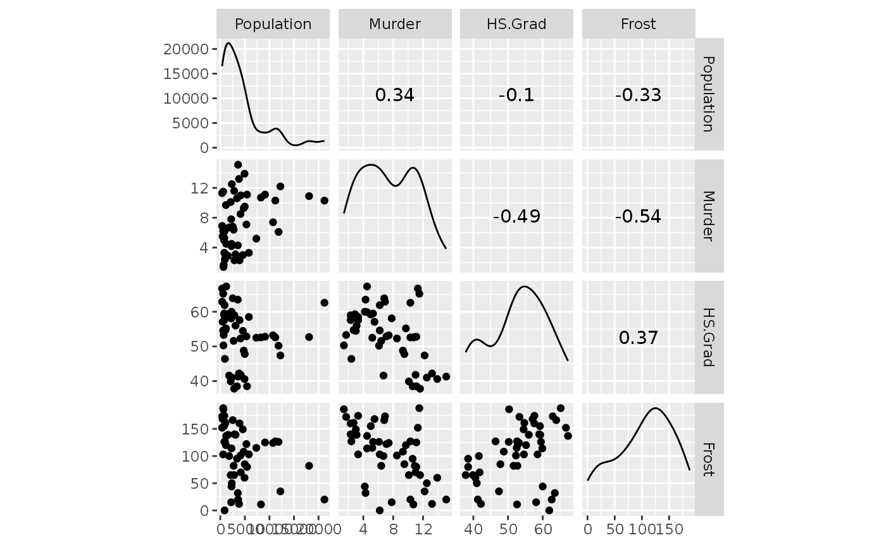
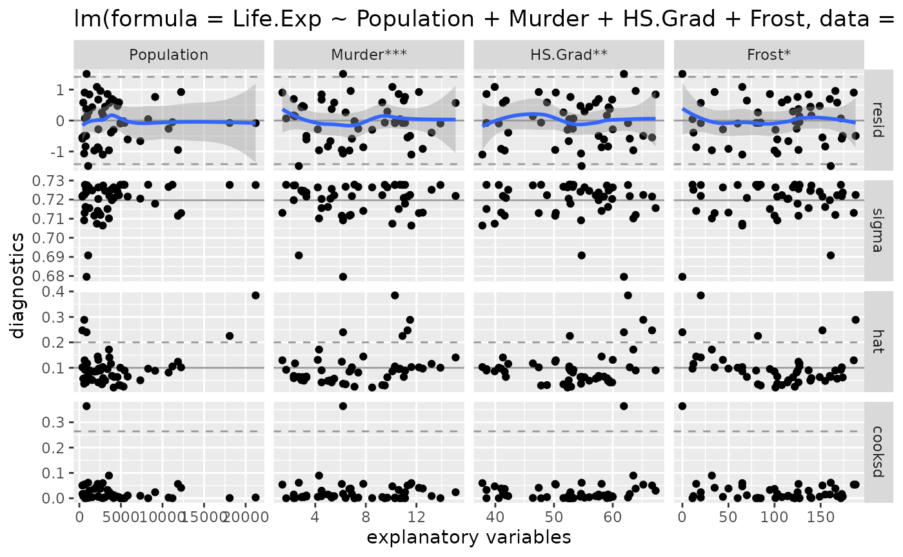
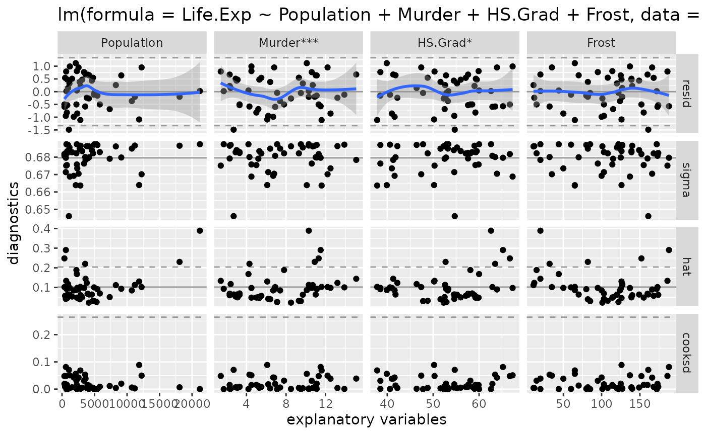
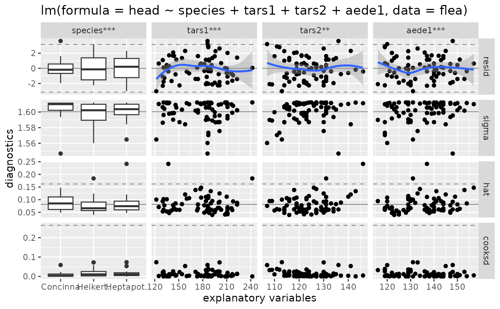
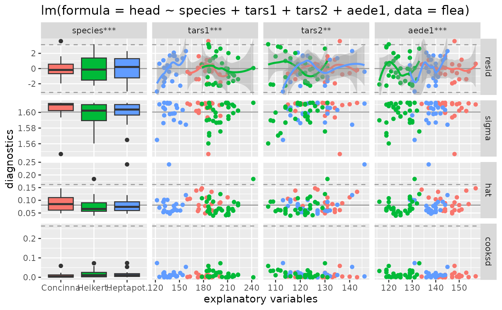
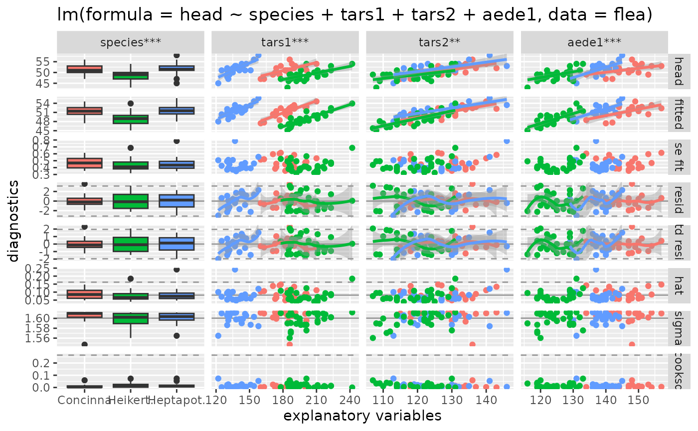

vignettes/ggnostic.Rmd
ggnostic.Rmd
library(GGally)
#> Loading required package: ggplot2
#> Registered S3 method overwritten by 'GGally':
#> method from
#> +.gg ggplot2GGally::ggnostic()
ggnostic() is a display wrapper to ggduo() that displays full model diagnostics for each given explanatory variable. By default, ggduo() displays the residuals, leave-one-out model sigma value, leverage points, and Cook’s distance against each explanatory variable. The rows of the plot matrix can be expanded to include fitted values, standard error of the fitted values, standardized residuals, and any of the response variables. If the model is a linear model, stars are added according to the stats::anova significance of each explanatory variable.
Most diagnostic plots contain reference line(s) to help determine if the model is fitting properly
".resid"
ggally_nostic_resid().stats::residuals
".std.resid"
ggally_nostic_std_resid().stats::rstandard
".sigma"
ggally_nostic_sigma().stats::influence’s value on sigma
".hat"
ggally_nostic_hat().stats::influence’s value on hat
".cooksd"
ggally_nostic_cooksd(). See also stats::cooks.distance()
".fitted"
ggally_points().stats::predict
".se.fit"
ggally_nostic_se_fit().stats::fitted
ggally_points().Looking at the dataset datasets::state.x77, we will fit a multiple regression model for Life Expectancy.
# make a data.frame and fix column names
state <- as.data.frame(state.x77)
colnames(state)[c(4, 6)] <- c("Life.Exp", "HS.Grad")
str(state)
#> 'data.frame': 50 obs. of 8 variables:
#> $ Population: num 3615 365 2212 2110 21198 ...
#> $ Income : num 3624 6315 4530 3378 5114 ...
#> $ Illiteracy: num 2.1 1.5 1.8 1.9 1.1 0.7 1.1 0.9 1.3 2 ...
#> $ Life.Exp : num 69 69.3 70.5 70.7 71.7 ...
#> $ Murder : num 15.1 11.3 7.8 10.1 10.3 6.8 3.1 6.2 10.7 13.9 ...
#> $ HS.Grad : num 41.3 66.7 58.1 39.9 62.6 63.9 56 54.6 52.6 40.6 ...
#> $ Frost : num 20 152 15 65 20 166 139 103 11 60 ...
#> $ Area : num 50708 566432 113417 51945 156361 ...
# fit full model
model <- lm(Life.Exp ~ ., data = state)
# reduce to "best fit" model with
model <- step(model, trace = FALSE)
summary(model)
#>
#> Call:
#> lm(formula = Life.Exp ~ Population + Murder + HS.Grad + Frost,
#> data = state)
#>
#> Residuals:
#> Min 1Q Median 3Q Max
#> -1.47095 -0.53464 -0.03701 0.57621 1.50683
#>
#> Coefficients:
#> Estimate Std. Error t value Pr(>|t|)
#> (Intercept) 7.103e+01 9.529e-01 74.542 < 2e-16 ***
#> Population 5.014e-05 2.512e-05 1.996 0.05201 .
#> Murder -3.001e-01 3.661e-02 -8.199 1.77e-10 ***
#> HS.Grad 4.658e-02 1.483e-02 3.142 0.00297 **
#> Frost -5.943e-03 2.421e-03 -2.455 0.01802 *
#> ---
#> Signif. codes: 0 '***' 0.001 '**' 0.01 '*' 0.05 '.' 0.1 ' ' 1
#>
#> Residual standard error: 0.7197 on 45 degrees of freedom
#> Multiple R-squared: 0.736, Adjusted R-squared: 0.7126
#> F-statistic: 31.37 on 4 and 45 DF, p-value: 1.696e-12Next, we look at the variables for any high (|value| > 0.8) correlation values and general interaction behavior.
# look at variables for high correlation (none)
ggscatmat(state, columns = c("Population", "Murder", "HS.Grad", "Frost"))
All variables appear to be ok. Next, we look at the model diagnostics.
# look at model diagnostics
ggnostic(model)
#> `geom_smooth()` using method = 'loess'
#> `geom_smooth()` using method = 'loess'
#> `geom_smooth()` using method = 'loess'
#> `geom_smooth()` using method = 'loess'
Let’s remove the largest data point first to try and define a better model.
# very high life expectancy
state[11, ]
#> Population Income Illiteracy Life.Exp Murder HS.Grad Frost Area
#> Hawaii 868 4963 1.9 73.6 6.2 61.9 0 6425
state_no_hawaii <- state[-11, ]
model_no_hawaii <- lm(Life.Exp ~ Population + Murder + HS.Grad + Frost, data = state_no_hawaii)
ggnostic(model_no_hawaii)
#> `geom_smooth()` using method = 'loess'
#> `geom_smooth()` using method = 'loess'
#> `geom_smooth()` using method = 'loess'
#> `geom_smooth()` using method = 'loess'
There are no more outrageous Cook’s distance values. The model without Hawaii appears to be a good fitting model.
summary(model)
#>
#> Call:
#> lm(formula = Life.Exp ~ Population + Murder + HS.Grad + Frost,
#> data = state)
#>
#> Residuals:
#> Min 1Q Median 3Q Max
#> -1.47095 -0.53464 -0.03701 0.57621 1.50683
#>
#> Coefficients:
#> Estimate Std. Error t value Pr(>|t|)
#> (Intercept) 7.103e+01 9.529e-01 74.542 < 2e-16 ***
#> Population 5.014e-05 2.512e-05 1.996 0.05201 .
#> Murder -3.001e-01 3.661e-02 -8.199 1.77e-10 ***
#> HS.Grad 4.658e-02 1.483e-02 3.142 0.00297 **
#> Frost -5.943e-03 2.421e-03 -2.455 0.01802 *
#> ---
#> Signif. codes: 0 '***' 0.001 '**' 0.01 '*' 0.05 '.' 0.1 ' ' 1
#>
#> Residual standard error: 0.7197 on 45 degrees of freedom
#> Multiple R-squared: 0.736, Adjusted R-squared: 0.7126
#> F-statistic: 31.37 on 4 and 45 DF, p-value: 1.696e-12
summary(model_no_hawaii)
#>
#> Call:
#> lm(formula = Life.Exp ~ Population + Murder + HS.Grad + Frost,
#> data = state_no_hawaii)
#>
#> Residuals:
#> Min 1Q Median 3Q Max
#> -1.48967 -0.50158 0.01999 0.54355 1.11810
#>
#> Coefficients:
#> Estimate Std. Error t value Pr(>|t|)
#> (Intercept) 7.106e+01 8.998e-01 78.966 < 2e-16 ***
#> Population 6.363e-05 2.431e-05 2.618 0.0121 *
#> Murder -2.906e-01 3.477e-02 -8.357 1.24e-10 ***
#> HS.Grad 3.728e-02 1.447e-02 2.576 0.0134 *
#> Frost -3.099e-03 2.545e-03 -1.218 0.2297
#> ---
#> Signif. codes: 0 '***' 0.001 '**' 0.01 '*' 0.05 '.' 0.1 ' ' 1
#>
#> Residual standard error: 0.6796 on 44 degrees of freedom
#> Multiple R-squared: 0.7483, Adjusted R-squared: 0.7254
#> F-statistic: 32.71 on 4 and 44 DF, p-value: 1.15e-12Since there is only a marginal improvement by removing Hawaii, the original model should be used to explain life expectancy.
The following lines of code will display different model diagnostic plot matrices for the same statistical model. The first one is of the default settings. The second adds color according to the species. Finally, the third displays all possible columns and uses ggally_smooth() to display the fitted points and response variables.
flea_model <- step(lm(head ~ ., data = flea), trace = FALSE)
summary(flea_model)
#>
#> Call:
#> lm(formula = head ~ species + tars1 + tars2 + aede1, data = flea)
#>
#> Residuals:
#> Min 1Q Median 3Q Max
#> -3.0152 -1.2315 -0.0048 1.1490 3.6068
#>
#> Coefficients:
#> Estimate Std. Error t value Pr(>|t|)
#> (Intercept) 0.63693 6.09162 0.105 0.917034
#> speciesHeikert. 1.13651 1.25452 0.906 0.368171
#> speciesHeptapot. 5.22207 0.92110 5.669 3.18e-07 ***
#> tars1 0.06815 0.01989 3.426 0.001043 **
#> tars2 0.10160 0.03297 3.081 0.002974 **
#> aede1 0.17069 0.04275 3.993 0.000163 ***
#> ---
#> Signif. codes: 0 '***' 0.001 '**' 0.01 '*' 0.05 '.' 0.1 ' ' 1
#>
#> Residual standard error: 1.6 on 68 degrees of freedom
#> Multiple R-squared: 0.685, Adjusted R-squared: 0.6618
#> F-statistic: 29.57 on 5 and 68 DF, p-value: 7.997e-16
# default output
ggnostic(flea_model)
#> `geom_smooth()` using method = 'loess'
#> `geom_smooth()` using method = 'loess'
#> `geom_smooth()` using method = 'loess'
# color'ed output
ggnostic(flea_model, mapping = ggplot2::aes(color = species))
#> `geom_smooth()` using method = 'loess'
#> `geom_smooth()` using method = 'loess'
#> `geom_smooth()` using method = 'loess'
# full color'ed output
ggnostic(
flea_model,
mapping = ggplot2::aes(color = species),
columnsY = c("head", ".fitted", ".se.fit", ".resid", ".std.resid", ".hat", ".sigma", ".cooksd"),
continuous = list(default = ggally_smooth, .fitted = ggally_smooth)
)
#> `geom_smooth()` using method = 'loess'
#> `geom_smooth()` using method = 'loess'
#> `geom_smooth()` using method = 'loess'
#> `geom_smooth()` using method = 'loess'
#> `geom_smooth()` using method = 'loess'
#> `geom_smooth()` using method = 'loess'